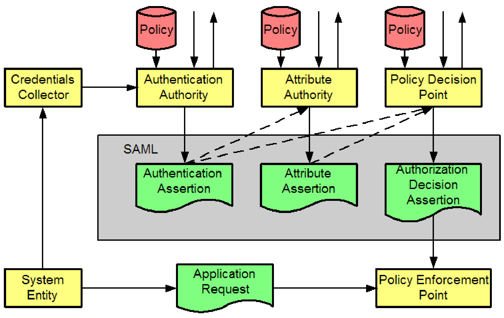

Identity Management en J2EE: XACML
Complementar SAML con XACML
Sin SAML las aplicaciones J2EE están confinadas a mecanismos propietarios para pasar información de autentificación y autorización entre sitios web. SAML proporciona tipos específicos de datos (asertos) y protocolos (basados en XML y no en la red) que usan esos datos para comunicar componentes de la arquitectura. SAML decribe un muy básico formato y protocolo para comunicar PEPs (Policy Enforcement Points) y PDPs (Policy Decision Points) pero no especifica como opera un PDP, es decir, cómo llega a tomar su decisión. Tampoco especifica como el PDP maneja la información (es decir las políticas) de la que depende su decisión. Recordemos el modelo conceptual de SAML

XACML (eXtensible Access Control Markup Language) proporciona formatos específicos de datos (p.e. Request y Response Context, PolicySet y Policy) y especifica cómo un componente PDP debe operar para procesar una petición de decisión de autorización de un PEP. XACML 2.0 define un profile para extender SAML, para implementar la interoperabilidad con SAML. XACML 2.0 es a la vez un lenguaje de políticas y un lenguaje de decisiones de control de acceso, todo ello en XML. Define una forma estándar para la expresión de reglas y políticas de autorización para producir decisiones de autorización.
Introdución a XACML
Motivación de XACML a partir de un escenario
Veamos un caso médico. Supongamos la siguiente secuencia:
1. El Sr. IIias Iakovidis ha sufrido un problema cardíaco y se encuentra hospitalizado en el Hospital de Ginebra.
2. El Hospital obtiene consentimientos del paciente después de la admisión. En este consentimiento, rellenado via web, el paciente especifica que el hospital puede acceder a su historial clínico si el paciente es informado por email. El consentimiento podría incluir restricciones más severas.
3. Los documentos de consentimiento son enviados al Common EU Registry/Repository.
4. Después del exámen y tratamiento, el paciente es dado de alta y ello se registra en un documento de alta que se envía al Common EU Registry/Repository. Éste documento queda almacenado con el código de confidencialidad General Clinical Information en el repositorio.
5. Después de volver a Bruselas, el primer médico que lo trató, Dr. John Doe, quiere acceder al documento de alta.
El Common EU Registry/Repository cuenta con una arquitectura basada en XACML para el control de acceso a/y la obtención de información de los consentimientos del paciente. Un paciente puede dar distintos consentimientos a distintos centros de salud, por lo cual el consentimiento de los enviado por el Hopsital de Ginebra es solo aplicable a documentos registrados en dicho hospital.
Sin embargo, ya que el Common EU Registry/Repository no puede mantener información de autentificación de todos los usuarios de Europa, debe confiar en otras entidades (Identity Providers o IP) que ayuden a facilitar la información cuando esta se requiere. Estas entidades almancenan y proporcionan, como sabemos, información de autentificación a los usuarios de sus empresas/centros de salud. Estas empresas médicas deben seguir el protocolo SAML con el IP y proporcionales información cuando autentifican a los usuarios de sus sistemas.

Pero el consentimiento para transmitir el documento de alta no llega sin intervenir XACML ya que el :
1. XACML tiene cuatro elementos para definir el contexto: Resource, Subject, Action y Environment.
2. PDP debe disponer, en primer lugar de la política (consentimiento, en este caso) definiendo los Attributes: resourceID y patientID. sero.
3. Entonces evalúa la política de acuerdo con los atributos del XACML Request y contesta con una XACML Response.
4. Además, el centro Common EU Registry/Repository debería enviar un informe a un Audit Record Repository.
XACML: Flujo de datos, lenguaje y arquitectura
Flujo de datos
La infraestructura básica de autorización consiste en los siguientes elementos:
| RBE (Rule Based Engine) | Punto central de decisión basada en políticas |
| PEP (Policy Enforcement Point) | Manejador de peticiones/respuestas de autorizaciones acerca de recursos y ejecución de obligaciones definidas en las políticas. |
| PAP (Policy Authority Point) | BD de políticas (en general distribuída). |
| PIP (Policy Information Point) | Proporciona un contexto externo de políticas y atributos para el RBE incluyendo las credenciales del sujeto y la verificación de los atributos. |
| RIP (Resource Information Point) | Proporciona el contexto del recurso. |
| AA (Attribute Authority) | Maneja los atributos de usuario. |
Para permitir el acceso a un recurso, el agente de recursos, via un PEP y una decisión de autorización de un PDP que evalúe la petición de autorización frente a la política definida para un trabajo en particular, recurso o atributors/roles del usuario. La política de acceso es definida por el dueño del recurso y almacenada en un repositorio de políticas.
Por otro lado, el PEP y el PDP pueden también pedir credenciales o atributos específicos del servicio de autentificación, así como información adicional acerca del recurso. En general los pasos a seguir son los siguientes:
1. El administrador de políticas escribe Policies y PolicySets en el PAP y las hace accesibles al PDP. Estas política o conjuntos de políticas representarán la política completa para un Target específico.
2. El peticionario de servicio realiza una petición a un PEP para acceder a un determinado recurso.
3. El PEP redirige la petición de acceso a un Context Handler en su formato de petición nativo. De manera opcional incluye Attributes de los Subjects, Resource, Action y Enviromnent.
4. El Context Handler construye el Context de una petición XACML y envía una petición de evaluación de política al PDP.
5. El PDP pide al Context Handler cualquier Attributes de los Subjects, Resource, Action y Enviromnent. Si estos atributos existen, sirven para evaluar las políticas.
6. El Context Handler consigue los atributos bien del Context creado en el paso 4 o bien realiza una consulta al PIP.
7. El PIP obtiene los atributos del Subject, Resource o Environment.
8. El PIP devuelve los atributos conseguidos al Context Handler. El PDP continúa evaluando la política a medida que va disponiendo de los atributos.
9. El Context Handler puede incluir opcionalmente al Resource en el contexto.
10. El Context Handler devuelve los atributos requeridos, y opcionalmente el Resource al PDP. Es entonces cuando el PDP evalúa la política.
11. El PDP devuelve un Context de respuesta (incluyendo la decisión de autorización) al Context Handler.
12. El Context Handler traduce el Context de respuesta al lenguaje de respuesta nativo del PEP y le devuelve la respuesta al PEP.
13. Si la respuesta implica permitir el acceso, entonces el PEP permite el acceso al recurso; en otro caso, deniega el acceso. Adicionalmente el PEP cumple con las obligaciones, generalmente para diferentes casos de soluciones PDP.
Lenguaje XACML
Una de las mayores motivaciones tecnológicas para crear XACML fue la necesidad de disponer de acceso parcial a documentos XML. El modelo de seguridad usual se basa en encriptar para controlar el acceso al documento entero. Los usuarios suelen estar autorizados a ver todo el documento o bien nada del mismo. El ejemplo clásico es el caso de que un usuario A está autorizado para ver todo el documento menos el número de tarjeta y otro usuario Y de otro departamento puede ver esta parte sensible del documento XML. En un entorno real típico, un usuario pide acceder a cierto recurso. El PEP es quien protege tal acceso y por lo tanto debe asegurarse de que el peticionario puede acceder. Para ello envía la petición al Policy Decision Point (PDP) quien consulta las políticas de acceso. Con XACML, el PEP dispone de un query language para pedir al PDP si una determinada acción está permitida. El PDP responde con Permit, Deny, Indeterminate (p.e. ocurre algún error o los valores suministrados son insuficientes para tomar una decisión) o NotApplicable (la petición no puede responderse por este servicio).
El modelo de datos de políticas es suficientemente rico como para definir complejas y flexibles políticas de seguridad. Es por ello que en los servidores de aplicaciones aconsejan usarlo si lo que se busca va más allá del lenguaje declarativo de que se dispone de forma estándar, pero como veremos más adelante (y este es uno de los objetivos de la sesión) XACML es lo ideal para definir repositorios de políticas.Los elementos más importantes del lenguaje son:
<PolicySet>: Conjunto de políticas o de otros <PolicySet> y algoritmo de combinación de políticas con una serie de <Obligations> opcionales.
<Policy>: Política de control de acceso expresada a partir de un conjunto de <Rule>. De hecho las políticas no son más que un conjunto de reglas combinadas por un algoritmo. En la política se pueden especificar <Obligations> que son operaciones que deben ser realizadas en conjunción con la aplicación de una decisión de autorización.
<Rule>: Expresiones que definen las condiciones bajo las cuales las peticiones de acceso son permitidas o denegadas. Se aplican a un objetivo (<Target>) que puede especificar alguna combinación particular de <Subjects>, <Resources> o <Actions>. El segundo elemento clave de una regla es el elemento <Condition>, que es una función booleana sobre atributos, o funciones de atributos, de sujetos, recursos o acciones. Si devuelve true entonces la regla devuelve ese resultado. Dentro de <Condition> tenemos el elemento <Apply> que se aplica a cualquier combinación de <Apply>,<AttributeValue>,<SubjectAttributeDesignator>, <EnvironmentAttributeDesignator> y <AttributeSelector>.
<Target>: Conjunto de condiciones simplificadas para el sujeto, recurso, o acción que deben satisfacerse para un conjunto de políticas, política o regla para aplicarse a una petición dada. Se usan funciones booleanas para comparar los valores encontrados en la petición con los incluidos en el <Target>. Además de ser una forma de comprobar aplicabilidad, la información del <Target> proporciona una forma de indexar políticas, lo cual resulta bastante útil para almacenar varias políticas y recorrer el repositorio hasta encontrar una que sea aplicable.
<...Attribute...>: Son valores nominales de tipos conocidos que pueden incluir un identificador de usuario o de fecha y tiempo. Específicamente, los atributos son características de sujeto, recurso, acción o del entorno en donde se realiza. P.e. el nombre de usuario, su grupo, un fichero al que pueden acceder y la hora del día de todos los valores. Cuando se envía una petición desde el PEP al PDP, esa petición está formada casi exclusivamente por atributos y estos deben compararse con los atributos de una política para tomar las decisiones de acceso.
<Request>: El mensaje de petición deberá contener obligatoriamente los elementos <Subject>, <Resource> y <Action> y opcionalmente <Environment>. El elemento <Subject> contiene normalmente los atributos del sujeto, su token de autentificación y posiblemente subelementos de su ID. El elemento <Resource> contiene el sub-elemento de su ID que especifica el recurso y puede contener múltiples sub-elementos que especifican atributos del recurso, p.e. relacionados con el subsistema de recursos o con contenidos. El elemento <Action> contiene solo el sub-elemento de su ID. Puede ser posible pedir múltiples acciones pero su manejo deberá ser definido en la política. Finalmente el elemento <Environment> proporciona información de contexto adicional acerca de la petición y puede usarse para referenciar al peticionario en caso de autorización mútua.
<Response>: El mensaje de respuesta de una petición XACML proporciona el formato para contener la decisión y el <Status> del proceso de toma de decisiones. Este mensaje puede contener múltiple elementos <Result> tal como se hayan definido en el mensaje de petición y en la política del recurso. El elemento <Result> contiene un elemento <Decision> que puede contener Deny, Permit o Intermediate. El elemento <Status> puede contener un simple código de estado como OK, request-info, etc. e información adicional de estado en los sub-elementos <StatusMessage> y <StatusSubDetail>
Arquitectura de XACML
XACML proporciona una interfaz virtual estándar entre el PDP y el peticionario de servicios. Debido a que XACML es un lenguaje de políticas es dificil definir una arquitectura técnica. XACML puede soportar una gran variedad de infraestructuras para repositorios de políticas. Por eso los elementos más importantes de su arquitectura son:
1.Context Handler. Transforma los formatos de las peticiones de servicio en un formato que XACML entienda.
2.PEP. Evalúa los accesos a recursos contra políticas y conjuntos de políticias.
3.Policy Repository. Repositorio de políticas y conjuntos de ellas.